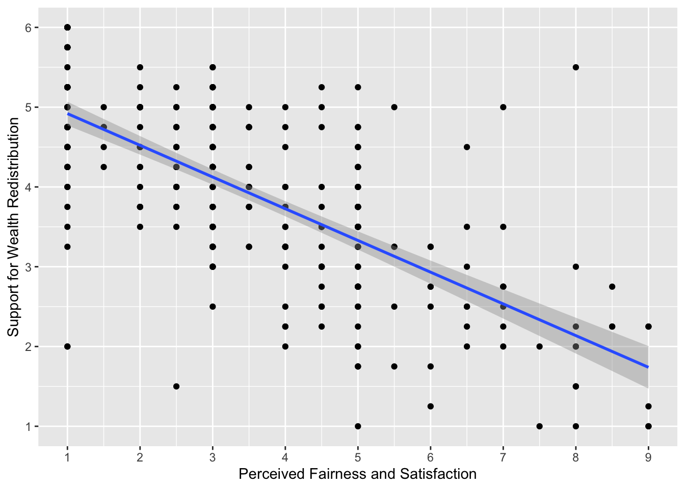
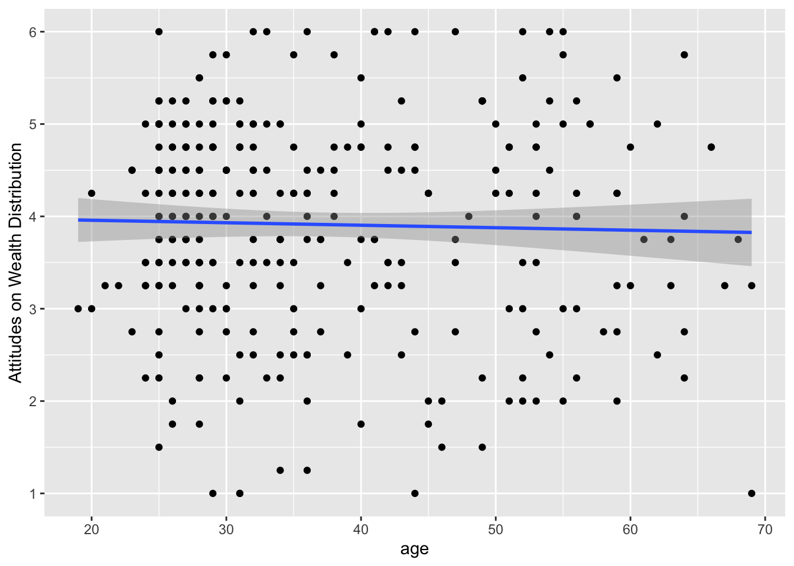
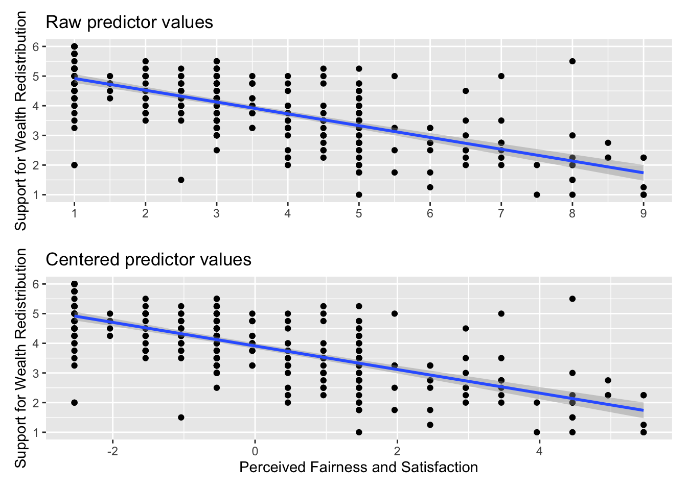
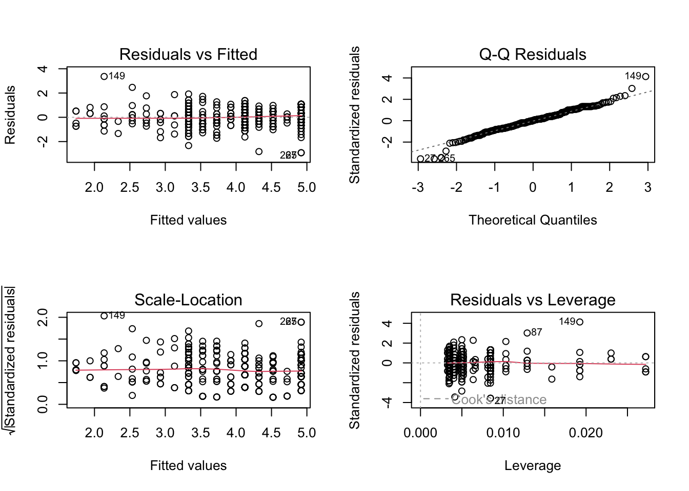
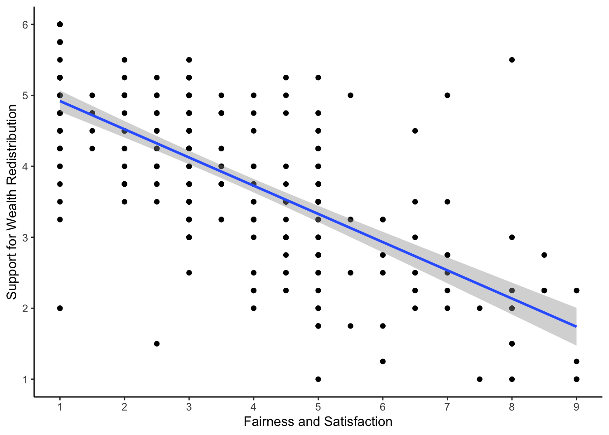
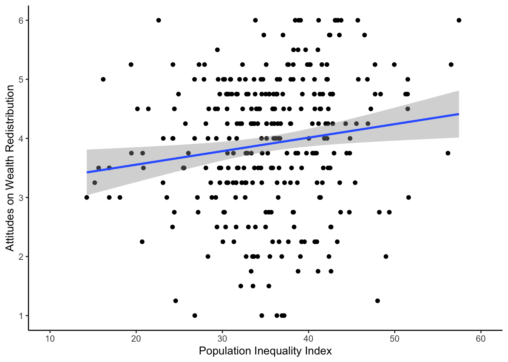

Rows: 305
Columns: 11
$ PS <dbl> 233, 157, 275, 111, 52, 11, 76, 90…
$ Household_Income <dbl> NA, 20.00, 100.00, 150.00, 500.00,…
$ Political_Preference <dbl> 5, 5, 5, 8, 5, 3, 4, 3, 2, 3, NA, …
$ age <dbl> 40, 59, 41, 59, 35, 34, 36, 39, 40…
$ gender <dbl> 2, 2, 2, 2, 1, 2, 2, 2, 2, 1, NA, …
$ Population_Inequality_Gini_Index <dbl> 38.78294, 37.21451, 20.75000, 35.3…
$ Population_Mean_Income <dbl> 29715, 123630, 60000, 59355, 15360…
$ Social_Circle_Inequality_Gini_Index <dbl> 28.056738, 24.323388, 14.442577, 2…
$ Social_Circle_Mean_Income <dbl> 21150, 65355, 107100, 86640, 56850…
$ fairness_satisfaction <dbl> 1.0, 3.5, 5.0, 7.0, 4.5, 2.5, 3.0,…
$ redistribution <dbl> 5.50, 3.25, 3.75, 2.75, 3.00, 3.75…1 Regression with one continuous predictor
In these first two chapters, we focus on simple linear regression for testing research questions and hypotheses. We are starting slow and demonstrating how common statistical tests such as correlation and t-tests are specific applications of the general linear model (Lindeløv, 2019). With inferential statistics, we want to test our research questions and hypotheses by analysing the data given the research design you are working with. By adopting a modelling approach, you will have far more flexibility to adapt to the design you are working with.
In this chapter, we focus on simple linear regression for testing research questions and hypotheses for the relationship between two continuous predictors. We will also explore the concepts of correlation and checking the statistical assumptions of your regression model.
Chapter Intended Learning Outcomes (ILOs)
By the end of this chapter, you will be able to:
Visualise the relationship between two continuous variables using a scatterplot.
Apply and interpret a Pearson’s and Spearman’s correlation.
Apply and interpret linear regression with one continuous predictor variable.
Check the assumptions of linear regression through diagnostic plots.
1.1 Chapter preparation
1.1.1 Introduction to the data set
For this chapter, we are using open data from Dawtry et al. (2015). The abstract of their article is:
The present studies provide evidence that social-sampling processes lead wealthier people to oppose redistribution policies. In samples of American Internet users, wealthier participants reported higher levels of wealth in their social circles (Studies 1a and 1b). This was associated, in turn, with estimates of higher mean wealth in the wider U.S. population, greater perceived fairness of the economic status quo, and opposition to redistribution policies. Furthermore, results from a large-scale, nationally representative New Zealand survey revealed that low levels of neighborhood-level socioeconomic deprivation?an objective index of wealth within participants’ social circles mediated the relation between income and satisfaction with the economic status quo (Study 2). These findings held controlling for relevant variables, including political orientation and perceived self-interest. Social-structural inequalities appear to combine with social-sampling processes to shape the different political attitudes of wealthier and poorer people.
In summary, the authors investigated why people with more money tend to oppose wealth redistribution policies like higher taxes for higher incomes to decrease inequality in society. We are using data from Study 1A where 305 people completed measures on household income, predicted population income, their predicted social circle income, in addition to measures on support for wealth redistribution and fairness and satisfaction with the current system.
They predicted people with higher incomes have social circles with higher incomes, so they are more satisfied with the current system of wealth redistribution and less interested in changing it. In essence, poorer people and richer people have different experiences of how rich and equal their country is. In this chapter, we will explore the relationship between a range of these variables.
1.1.2 Organising your files and project for the chapter
Before we can get started, you need to organise your files and project for the chapter, so your working directory is in order. This course builds on Data Skills for Reproducible Research to focus on inferential statistics, so if any concepts sound unfamiliar, make sure you revisit the course book.
To keep your work organised for this course, we recommend creating a folder on your computer for the course, then a separate sub-folder for assessments and each chapter of the book. Within each sub-folder, create folders for data and figures, so you have somewhere memorable to save the files and you know where everything is.
In your folder for statistics and research design
Stats_Research_Design, create a new folder called01_regression_continuous. Within01_regression_continuous, create two new folders calleddataandfigures.Create an R Project for
01_regression_continuousas an existing directory for your chapter folder. This should now be your working directory.Create a new Quarto document and give it a sensible title describing the chapter, such as
01 Correlations and Regressionand save the file in your01_regression_continuousfolder.We are working with a new data set, so please save the following data file: Dawtry_2015.csv. Right click the link and select “save link as”, or clicking the link will save the files to your Downloads. Make sure that you save the file as “.csv”. Save or copy the file to your
data/folder within01_regression_continuous.
You are now ready to start working on the chapter!
1.1.3 Activity 1 - Read and wrangle the data
As the first activity, try and test yourself by completing the following task list to practice your data wrangling skills. Create a final object called dawtry_clean to be consistent with the tasks below. If you just want to focus on correlations and regression, then you can just type the code in the solution.
Try this
To wrangle the data, complete the following tasks:
-
Load the following packages. If you do not have them already, remember you will need to install them first if you are working on your own computer:
tidyverse effectsize correlation performance
Read the data file
data/Dawtry_2015.csvto the object namedawtry_data.Reverse code two items:
redist2andredist4to create two new variablesredist2_Randredist4_R. See the codebook below, but they are on a 1-6 scale.Summarise the data to calculate the mean
fairness_satisfactionscore, by taking the mean of two items:fairnessandsatisfaction.Summarise the data to calculate the mean
redistributionscore, by taking the mean of four items:redist1,redist2_R,redist3, andredist4_R.Create a new object called
dawtry_cleanby joiningdawtry_datawith your two new variablesfairness_satisfactionandredistribution.Decrease the number of columns in
dawtry_cleanby selectingPS, all the columns betweenHousehold_Incomeandredistribution, but removing the two reverse coded itemsredist2_Randredist4_R.
Your data should look like this to be ready to analyse:
Show me the solution
You should have the following in a code chunk:
# Load the packages below
library(tidyverse)
library(effectsize)
library(correlation)
library(performance)
# Load the data file
# This should be the Dawtry_2015.csv file
dawtry_data <- read_csv("data/Dawtry_2015.csv")
# Reverse code redist2 and redist4
dawtry_data <- dawtry_data %>%
mutate(redist2_R = 7 - redist2,
redist4_R = 7 - redist4)
# calculate mean fairness and satisfaction score
fairness_satisfaction <- dawtry_data %>%
pivot_longer(cols = fairness:satisfaction,
names_to = "Items",
values_to = "Response") %>%
group_by(PS) %>%
summarise(fairness_satisfaction = mean(Response)) %>%
ungroup()
# calculate mean wealth redistribution score
redistribution <- dawtry_data %>%
pivot_longer(cols = c(redist1, redist2_R, redist3, redist4_R),
names_to = "Items",
values_to = "Response") %>%
group_by(PS) %>%
summarise(redistribution = mean(Response)) %>%
ungroup()
# join data and select columns for focus
dawtry_clean <- dawtry_data %>%
inner_join(fairness_satisfaction, by = "PS") %>%
inner_join(redistribution, by = "PS") %>%
select(PS, Household_Income:redistribution, -redist2_R, -redist4_R)1.1.4 Activity 2 - Explore the data
Try this
After the wrangling steps, try and explore dawtry_clean to see what variables you are working with. For example, opening the data object as a tab to scroll around, explore with glimpse(), or try plotting some of the individual variables using a histogram.
In dawtry_clean, we have the following variables:
| Variable | Type | Description |
|---|---|---|
| PS | double | Participant ID number. |
| Household_Income | double | Household income in US Dollars ($). |
| Political_Preference | double | Political attitudes: 1 = very liberal/very left-wing/strong Democrat to 7 = very conservative/very right-wing/strong Republican. |
| age | double | Age in years. |
| gender | double | 1 = “Male”, 2 = “Female. |
| Population_Inequality_Gini_Index | double | Measure of income inequality from 0 (perfect equality) to 100 (perfect inequality), here where participants estimated population in equality. |
| Population_Mean_Income | double | Participant estimate of the mean household income in the population ($). |
| Social_Circle_Inequality_Gini_Index | double | Measure of income inequality from 0 (perfect equality) to 100 (perfect inequality), here where participants estimated inequality in their social circle. |
| Social_Circle_Mean_Income | double | Participant estimate of the mean household income in their social circle ($). |
| fairness_satisfaction | double | Perceived fairness and satisfaction about the current system of wealth redistribution: Mean of two items (1 extremely fair – 9 extremely unfair) |
| redistribution | double | Support for wealth distribution: Mean of four items (1 strongly disagree – 6 strongly agree). |
We will use this data set to demonstrate correlations and regression when you have one continuous predictor.
1.2 Correlation
Before we cover regression as a more flexible framework for inferential statistics, we think it is useful to start with correlation to get a feel for how we can capture the relationship between two variables. As a reminder, correlations are standardised to range from -1 (a perfect negative correlation) to 1 (a perfect positive correlation). A value of 0 would mean there is no correlation between your variables.
1.2.1 Activity 3 - Visualise the relationship
To explore the relationship between two variables, it is useful to create a scatterplot early for yourself, then provide a more professional looking version to help communicate your results. For most of the demonstrations in this chapter, we will try and answer the research question: “Is there a relationship between support for wealth redistribution and fairness and satisfaction with the current system?”
Try this
Using your data visualisation skills from Repro Res, recreate the scatterplot below using the variables fairness_satisfaction and redistribution from dawtry_clean.

Looking at the graph, we can describe the relationship as .
Show me the solution
The scatterplot shows a negative correlation between the two variables. You need to be careful interpreting fairness and satisfaction as it is coded a little counterintuitive. Higher values mean great dissatisfaction.
As support for wealth redistribution increases to be more positive, perceived fairness and satisfaction tends to decrease. This makes sense as people who are more dissatisfied with the current system think there should be more wealth redistribution strategies.
You should have the following in a code chunk:
1.2.2 Activity 4 - Calculate the correlation coefficient
Visualising the relationship between two variables is great for our understanding, but it does not tell us anything about the inferential statistics for what we can learn from our sample in hypothesis testing and measures of effect size.
A correlation is a specific application of the general linear model. We want to capture the covariation between two variables. If you are interested, see the Handy Workbook (McAleer, 2023) for the calculations behind different types of correlation and how it represents the covariance of two variables compared to their total variability. They are not the only methods, but the two most common versions of a correlation are:
Pearson’s product-moment correlation (often shortened to the PearsonA standardised measure of the linear relationship between two variables that makes stringent assumptions about the population. correlation) and symbolised by r.
Spearman’s rank correlation coefficient (often shortened to the SpearmanA standardised measure of the relationship between two variables that assumes a monotonic - but not necessarily a linear - relationship and makes less stringent assumptions about the population. correlation) and symbolised by \(r_s\) or sometimes the Greek letter rho \(\rho\).
There is a function built into R (cor.test()) to calculate the correlation between two variables, but we tend to use the correlation() function from the correlation() function requires:
The name of the data set you are using.
The name of the first variable you want to select for the correlation.
The name of the second variable you want to select for the correlation.
The type of correlation you want to run: e.g.
pearson,spearman.
For our dawtry_clean data, we would run the following code for a two-tailed Pearson correlation:
| Parameter1 | Parameter2 | r | CI | CI_low | CI_high | t | df_error | p | Method | n_Obs |
|---|---|---|---|---|---|---|---|---|---|---|
| fairness_satisfaction | redistribution | -0.70034 | 0.95 | -0.7533907 | -0.6382316 | -17.07843 | 303 | < .001 | Pearson correlation | 305 |
Your output will look a little different due to how our book renders tables, but you should get the same information. For the three key concepts of inferential statistics, we get
Hypothesis testing: p < .001, suggesting we can reject the null hypothesis assuming \(\alpha\) = .05.
Effect size: r = -.70, suggesting a strong negative correlation.
Confidence interval: [-0.75, -0.64], showing the precision around the effect size estimate.
To summarise: a Pearson correlation showed there was a strong, negative, statistically significant relationship between attitudes on wealth redistribution and perceived fairness and satisfaction, r (303) = -0.70, p < .001, 95% CI = [-0.75, -0.64].
If we had reason to use a Spearman correlation instead, all we need to do is change the method argument.
| Parameter1 | Parameter2 | rho | CI | CI_low | CI_high | S | p | Method | n_Obs |
|---|---|---|---|---|---|---|---|---|---|
| fairness_satisfaction | redistribution | -0.6806667 | 0.95 | -0.738182 | -0.6133274 | 7947402 | < .001 | Spearman correlation | 305 |
Similarly, we could report the results as: a Spearman correlation showed there was a strong, negative, statistically significant relationship between attitudes on wealth redistribution and perceived fairness and satisfaction, \(r_s\) (303) = -0.68, p < .001, 95% CI = [-0.74, -0.61].
Try this
Great work following along so far, but now it is time to test your understanding on a new set of variables. Use the variables age and redistribution from dawtry_clean. We can ask the question: “What is the relationship between age and attitudes on wealth redistribution?”
Create a scatterplot to visualise the relationship between
ageandredistributionfromdawtry_clean.-
Apply the Pearson correlation to get your inferential statistics and answer the following questions:
Hypothesis testing: Assuming \(\alpha\) = .05, the relationship between age and wealth redistribution is .
Effect size: Rounded to 2 decimals, the value for Pearson’s correlation coefficient is .
Confidence interval: Rounded to 2 decimals, the lower bound is and the upper bound is .
Show me the solution
The scatterplot shows very little correlation between the two variables. The regression line is almost flat and there does not appear to be a clear pattern to the data points.
dawtry_clean %>%
ggplot(aes(x = age, y = redistribution)) +
geom_point() +
geom_smooth(method = "lm") +
scale_y_continuous(name = "Attitudes on Wealth Distribution",
breaks = c(1:6))
For our inferential statistics, the relationship is not statistically significant and the Pearson correlation coefficient is very weak, r (302) = -0.03, p = .625, 95% CI = [-0.14, 0.08]. Note there is a missing value for age, so we have one few participant / degrees of freedom.
1.3 Linear regression with one continuous predictor
Now you know how to calculate a correlation in R, we can turn to simple linear regression as a more flexible tool for modelling the relationship between variables. In this chapter, we focus on the relationship between a continuous outcomeThe outcome (also known as the dependent variable) is the variable you are interested in seeing a potential change in. and one continuous predictorThe predictor (also known as an independent variable) is the variable you measure or manipulate to see how it is associated with changes in the outcome variable., before extending the framework to one categorical predictor in Chapter 2. There is also a chapter in the Handy Workbook (McAleer, 2023) dedicated to manually calculating simple linear regression.
1.3.1 Activity 5- Calculating descriptive statistics
For all the information we want to include in a report, calculating descriptive statistics is helpful for the reader to show the context behind the results you present. Here, we can report the mean and standard deviation of our two variables.
dawtry_clean %>%
# pivot longer to avoid repeating yourself
pivot_longer(cols = fairness_satisfaction:redistribution,
names_to = "Variable",
values_to = "Value") %>%
# group by Variable to get one value per variable
group_by(Variable) %>%
# mean and SD, rounded to 2 decimals
summarise(mean_variable = round(mean(Value), 2),
sd_variable = round(sd(Value), 2))| Variable | mean_variable | sd_variable |
|---|---|---|
| fairness_satisfaction | 3.54 | 2.02 |
| redistribution | 3.91 | 1.15 |
Note
If you want some reinforcement of how these skills apply to published research, look at Table 1 in Dawtry et al. (2015). The means and standard deviations here (and the correlation in Activity 4) exactly reproduce the values they report.
If other types of descriptive statistic would be more suitable to your data, then you can just replace the functions you use within summarise().
1.3.2 Activity 6 - Using the lm() function
For our research question of “is there a relationship between support for wealth redistribution and fairness and satisfaction”, we can address it with simple linear regression.
Instead of a standardised correlation coefficient, we can frame it as whether knowing fairness and satisfaction can predict values of support for wealth redistribution. The design is still correlational, so it does not tell us anything about a causal relationship in isolation. We use the word predict in the statistical sense, where we can ask whether knowing values of one variable help us predict values of another variable with a degree of error.
The first step is to create an object (lm_redistribution) for the linear model.
The function lm() is built into R and is incredibly flexible for creating linear regression models.
The first argument is to specify a formula which defines our model. The first component (
redistribution) is our outcome variable for what we are interested in modelling.The tilde (
~) separates the equation, where everything on the right is your predictor variable(s). In simple linear regression, we just have one predictor, which isfairness_satisfactionin our model here. This is saying we want to predictredistributionas our outcome fromfairness_satisfactionas our predictor.We then specify the data frame we want to use.
Note
In some resources, you might see people enter the same model as redistribution ~ 1 + fairness_satisfaction. The 1 + component explicitly tells R to fit an intercept, plus a slope from fairness_satisfaction. R includes an intercept by default, so you do not need to add it, but some people like to include it for clarity.
When you create this object, it stores a bunch of information, but does not really tell us all the statistics we expect. If you simply print the object in the console, it will tell you the intercept and coefficient(s), but none of the model fitting nor hypothesis testing values. If you look at the object in the R environment, you will see it is a list containing several elements. It stores things like the model, the residuals, and other information you can use.
Call:
lm(formula = redistribution ~ fairness_satisfaction, data = dawtry_clean)
Coefficients:
(Intercept) fairness_satisfaction
5.3169 -0.3975 To get that extra information, we need to call the summary() function around the linear model object to explore it’s properties like estimates and model fit.
Call:
lm(formula = redistribution ~ fairness_satisfaction, data = dawtry_clean)
Residuals:
Min 1Q Median 3Q Max
-2.9193 -0.5279 0.0233 0.4782 3.3634
Coefficients:
Estimate Std. Error t value Pr(>|t|)
(Intercept) 5.31686 0.09488 56.04 <2e-16 ***
fairness_satisfaction -0.39754 0.02328 -17.08 <2e-16 ***
---
Signif. codes: 0 '***' 0.001 '**' 0.01 '*' 0.05 '.' 0.1 ' ' 1
Residual standard error: 0.8218 on 303 degrees of freedom
Multiple R-squared: 0.4905, Adjusted R-squared: 0.4888
F-statistic: 291.7 on 1 and 303 DF, p-value: < 2.2e-16To walk through the output, Call: summarises the model you specified. Residuals: provides a summary of the model residuals which we will come back to later. Coefficients: provides our model output, this time with inferential statistics. The two key lines are:
(Intercept)- This is the value of the outcome when our predictor is set to 0. For a fairness and satisfaction value of 0, we would expect a value of 5.32 for redistribution. You get a p-value for this, but in isolation it is not too useful. It just compares the intercept estimate to 0 which typically you are not interested in.fairness_satisfaction- This is the regression slope or coefficient. This is the change in the outcome for every 1 unit change in the predictor. So, for every 1 unit increase in fairness and satisfaction, we expect support for wealth redistribution to decrease (as we have a negative value) by 0.40 units. This is consistent with the correlation as we have a negative relationship between the two variables. Looking at the p-value, this is statistically significant (p < .001), suggesting we can reject the null hypothesis and conclude there is an effect here.
Does it matter if the slope is positive or negative?
When you have a continuous predictor, the sign is important to keep in mind. A positive slope would mean an increase in the predictor is associated with increased values of your outcome. A negative slope would mean an increase in the predictor is associated with decreased values of your outcome. This is crucial for interpreting the coefficient.
At the bottom of the model output, you then get the fit statistics. Multiple \(R^2\) tells you how much variance in your outcome your predictor(s) explain. Adjusted \(R^2\) tends to be more conservative as it adjusts for the number of predictors in the model (something we will not cover until Chapter 3 on multiple regression), but they will be very similar when you have one predictor. Adjusted \(R^2\) is .49, suggesting fairness and satisfaction explains 49% of the variance in support for wealth redistribution.
Finally, we have the model fit statistics to tell us whether the model explains a significant amount of variance in the outcome. With one predictor, the p-value next to the coefficient and next to the model fit will be identical, as one predictor is the whole model. The F-statistic is 291.7, the model degrees of freedom is 1, the residual degrees of freedom is 303, and the p-value is p < .001.
What does 2e-16 mean?
For the p-value here, the output looks a little weird. R reports very small or very large numbers using scientific notation to save space. We normally report p-values to three decimals, so we report anything smaller as p < .001 to say it is smaller than this.
If you want to see the real number, you can use the following function which shows just how small the p-value is:
How are correlation and regression the same?
If you are interested in the relationship between the two concepts, we said correlation was a specific application of the general linear model. It describes the - standardised - covariation between two variables compared to their total variability. For values of -1 and 1, knowing the value of one variable perfectly correlates to the value of your other variable. As you approach 0, the relationship between the variables is less perfect, meaning there is more variability left over compared to the covariance.
In regression, we frame it as how much variance you explain compared to the total amount of variance. The more variance your predictor explains, the less unexplained variance there is left over. We no longer calculate r, we calculate \(R^2\) as the proportion of variance in your outcome explained by your model. A value of 0 would be you explain no variance and a value of 1 means you explain all the variance.
You can see the connection between the two by comparing the value of Pearson’s r from Activity 4 (-.70) to the value of \(R^2\) = .4905. If you take the square root to get r (sqrt(.4905)), you get .70, which is exactly the same absolute value since \(R^2\) can only be positive.
So, when you have a single continuous predictor, it is the exact same process as correlation, just expressed slightly different.
1.3.3 Activity 7 - Calculating confidence intervals
In the standard lm() and summary() output, we get most of the key values we need for our inferential statistics, but the one thing missing is confidence intervals around our estimates. Fortunately, R has a built-in function called confint() for calculating confidence intervals using your linear model object.
2.5 % 97.5 %
(Intercept) 5.1301581 5.5035664
fairness_satisfaction -0.4433442 -0.3517332Normally, you focus on the confidence interval around your slope estimate as the intercept is not usually super useful for interpreting your findings when you have a continuous predictor. Now, we can summarise the three key concepts of inferential statistics as:
Hypothesis testing: p < .001, suggesting we can reject the null hypothesis assuming \(\alpha\) = .05. Fairness and satisfaction is a significant predictor of support for wealth redistribution.
Effect size: \(b_1\) = -0.40, suggesting fairness and satisfaction is a negative predictor.
Confidence interval: [-0.44, -0.35], showing the precision around the slope estimate.
Try this
Great work following along so far, but now it is time to test your understanding on a new set of variables. This time, use redistribution as your outcome, age as your predictor, and use dawtry_clean as your data. We can ask the same question as before: “What is the relationship between age and attitudes on wealth redistribution?”.
Apply simple linear regression to get your inferential statistics and answer the following questions:
Hypothesis testing: Assuming \(\alpha\) = .05, age is a predictor of support for wealth redistribution.
Effect size: Rounded to 2 decimals, the age coefficient is .
Confidence interval: Rounded to 2 decimals, the lower bound of the age coefficient is and the upper bound is .
Show me the solution
The conclusions are the same as when we calculated the correlation where age is not a statistically significant predictor of support for wealth redistribution. As a regression model, we get the same conclusions expressed in a slightly different way. Age is negative, but the size of the slope is very small (-0.003) and non-significant (p = .625). We explain pretty much no variance in support for wealth redistribution (\(R^2\) = .0008), so age is not very informative as a predictor.
# Create lm object for age as a predictor
lm_age <- lm(redistribution ~ age,
data = dawtry_clean)
# summary of the model object
summary(lm_age)
Call:
lm(formula = redistribution ~ age, data = dawtry_clean)
Residuals:
Min 1Q Median 3Q Max
-2.93382 -0.69527 0.08099 0.84379 2.13621
Coefficients:
Estimate Std. Error t value Pr(>|t|)
(Intercept) 4.011931 0.216042 18.57 <2e-16 ***
age -0.002693 0.005499 -0.49 0.625
---
Signif. codes: 0 '***' 0.001 '**' 0.01 '*' 0.05 '.' 0.1 ' ' 1
Residual standard error: 1.153 on 302 degrees of freedom
(1 observation deleted due to missingness)
Multiple R-squared: 0.0007938, Adjusted R-squared: -0.002515
F-statistic: 0.2399 on 1 and 302 DF, p-value: 0.6246 2.5 % 97.5 %
(Intercept) 3.58679351 4.43706821
age -0.01351424 0.008127381.3.4 Activity 8 - Centering and standardising predictors
So far, we have covered specifying your outcome and predictor variables as their raw values in the data. However, there are two variations that are useful to understand: centering and standardising predictors. These do not change the model fitting or p-values, but change how you interpret the intercept and/or slope.
1.3.4.1 Centering predictors
CenteringUsually, centering a predictor means subtracting the mean from each value, so the mean is 0. You can then interpret the intercept as the value of your outcome for the mean value of your predictor(s). predictors is where you change the values of your predictor, but not their scale. Typically, this means substracting the mean of your predictor from each observation. This changes how you interpret the intercept of your regression model.
Remember the interpretation of the intercept is the predicted value of your outcome when your predictor is set to 0. If 0 is not present in your data or a value of 0 would be uninformative, the intercept can be difficult to interpret. When you center your predictor, 0 becomes the mean value of your predictor. So, the intercept is now the predicted value of your outcome for the mean value of your predictor, but the slope itself does not change. You can see the impact of this by plotting the data side by side in Figure 1.1.

The relationship between the two variables is exactly the same, but the values of fairness and satisfaction shifted so the mean is 0. If you create a new linear model object, you can see the difference this makes to the output.
Call:
lm(formula = redistribution ~ fairness_center, data = dawtry_clean)
Residuals:
Min 1Q Median 3Q Max
-2.9193 -0.5279 0.0233 0.4782 3.3634
Coefficients:
Estimate Std. Error t value Pr(>|t|)
(Intercept) 3.90984 0.04706 83.09 <2e-16 ***
fairness_center -0.39754 0.02328 -17.08 <2e-16 ***
---
Signif. codes: 0 '***' 0.001 '**' 0.01 '*' 0.05 '.' 0.1 ' ' 1
Residual standard error: 0.8218 on 303 degrees of freedom
Multiple R-squared: 0.4905, Adjusted R-squared: 0.4888
F-statistic: 291.7 on 1 and 303 DF, p-value: < 2.2e-16Every single one of the values remains the same apart from the intercept. Now, we can interpret it as the predicted value of redistribution when fairness and satisfaction is set to 0, i.e., the mean value. So, for the mean value of fairness and satisfaction, we would predict a value of 3.91 for redistribution.
1.3.4.2 Standardising predictors
StandardisingStandardising involves substracting the variable mean from each value and dividing it by the variable standard deviation. It then has the property of a mean of 0 and standard deviation of 1, so you interpret the units as standard deviations. predictors is where you first convert your values to z-scores. This means you interpret the values as standard deviations rather than your original units. This is more useful in multiple regression (Chapter 3) to compare the magnitude of predictors, but it is useful to get used to now when you only have one predictor to focus on.
The first step is to standardise all your variables, not just the predictor this time. This involves subtracting the mean of your variable from each value, and dividing by the standard deviation of the variable. They now have a mean of 0 and a standard deviation of 1.
Once we enter them into the model, we no longer have values in the original units of measurement, we now have them expressed as standard deviations.
lm_standardised <- lm(redistribution_std ~ fairness_std,
data = dawtry_clean)
summary(lm_standardised)
Call:
lm(formula = redistribution_std ~ fairness_std, data = dawtry_clean)
Residuals:
Min 1Q Median 3Q Max
-2.53979 -0.45930 0.02026 0.41604 2.92617
Coefficients:
Estimate Std. Error t value Pr(>|t|)
(Intercept) 7.387e-16 4.094e-02 0.00 1
fairness_std -7.003e-01 4.101e-02 -17.08 <2e-16 ***
---
Signif. codes: 0 '***' 0.001 '**' 0.01 '*' 0.05 '.' 0.1 ' ' 1
Residual standard error: 0.715 on 303 degrees of freedom
Multiple R-squared: 0.4905, Adjusted R-squared: 0.4888
F-statistic: 291.7 on 1 and 303 DF, p-value: < 2.2e-16Like centering, the model fit and p-values do not change again, apart from the intercept. The relationship between the variables is exactly the same, but we changed their units. The intercept is tiny and close enough to zero that the p-value is 1.
More importantly, the slope is now expressed in standard deviations. Annoyingly, R prints the values in scientific notation, so this can be awkward to read (remember the format() function). Now, for every 1 standard deviation increase in our predictor, we predict the outcome to decrease by 0.70 standard deviations.
Tip
It is important to demonstrate the underlying concepts first but if you want a shortcut without needing to standardise all your variables, the standardize_parameters() which you can apply to your initial lm() object.
1.4 Checking assumptions
For the inferential statistics to work as intended, the model makes certain assumptions about the data you are putting into it and the accuracy of the inferences depends on how sensible these assumption are. Remember these functions will always work even if the numbers you enter are nonsense, so it’s important for you as the researcher to recognise when it’s appropriate to use these techniques and when it is not.
1.4.1 Activity 9 - Diagnostic plots for linear regression
As a reminder, the assumptions for simple linear regression are:
The outcome is interval/ratio level data.
The predictor variable is interval/ratio or categorical (with two levels at a time).
All values of the outcome variable are independent (i.e., each score should come from a different participant/observation).
The predictors have non-zero variance.
The relationship between the outcome and predictor is linear.
The residuals should be normally distributed.
There should be homoscedasticity.
Assumptions 1-4 are pretty straight forward as they relate to your understanding of the design or a simple check on the data for non-zero variance (the responses are not all the exact same value).
Assumptions 5-7 require diagnostic checks on the residualsThe difference between the observed value in the data and the predicted value from the model given its assumptions. from the model. The residuals are the difference between your observed values in the data and the values your model predicts given it’s assumptions. If you remember back, we highlighted the model output mentioned Residuals: and they are saved within the model object.
1 2 3 4 5 6
0.5806764 -0.6754769 0.4208311 0.2159084 -0.5279383 -0.5730156
What does the $ symbol mean?
We have not used this symbol in the book yet, but it is a base R operator for extracting information. You use it to access specific components within a data frame or object.
Try the following in the console to see what it does:
dawtry_clean$agelm_redistribution$coefficients
If you type an object name into the console and add the $, you will see all the components appear to auto complete.
In your reading, you might see individual statistical tests to check these assumptions, but they have more limitations than benefits. The best way to check the assumptions is through diagnostic plots which express the model residuals in different ways. We want to walk through this longer way of checking assumptions to develop a solid understanding before showing you a shortcut to see them all below.
In the code below, we use a format you will be less familiar with as all these functions come from base R. If you just run the code for the diagnostic plots plot(lm_redistribution), each one gets individually printed to your Plots window. Here, we create a 2x2 panel to show them all together.
# Change the panel layout to 2 x 2
par(mfrow=c(2,2))
# plot the diagnostic plots
plot(lm_redistribution)
For more information on each of these plots, see this great resource by Kim (2015) via the University of Virginia, but we will break the key ones down below.
1.4.2 Checking linearity
To isolate each plot, we can use the which argument. Plot 1 is a residuals vs fitted plot and helps us check linearity by showing the residuals on the y-axis and the fitted (predicted) values on the x-axis.
Here, you are looking out for a roughly flat horizontal red line. Common patterns to look out for if there is a problem are when the line has an obvious curve to look like a hump or several bends to look like an S.
The only downside to using diagnostic plots is it takes experience to recognise when there is nothing wrong with a regression model compared to when it violates the assumptions. It is easy to see a little deviation and think there is some drastically wrong. Our advice is if you squint and it looks fine, it is probably fine. You are looking for clear and obvious deviations from what you expect and all the models we use in Chapters 1 to 3 are intentionally fine to develop foundational skills. In Chapter 4 and 5, we then introduce you to more problematic cases and what your options are, and introducing more flexible models.
Error mode
If you want to save these plots to add into a report, you might try using ggsave(). However, it will not work as these plots have not been created by
To save these plots, you can either right click and choose save as to save on your computer. Alternatively, if they open in the Plots window, you can click on Export and save them as an image or PDF to insert into your documents.
1.4.3 Checking normality
Plot 2 is a qq-plot (quantile-quantile plot) and helps us check the normality of the model residuals by showing the standardised residuals on the y-axis and the theoretical quantiles on the x-axis. A common misconception is your variables should all be normally distributed, but it is actually the model residuals which should be normal.
In this plot, you are looking for the data points to roughly follow the dashed line. The idea is there should be a linear relationship between the residuals and the values we would expect under a normal distribution.
Like the other diagnostic plots, it is tempting to think there are problems where there are none. The vast majority of the points here follow the line nicely, but tail off a little at the extremes. It flags the points with the largest deviations but there do not appear to be any obvious problems.
When there are problems with normality, you are looking for obvious deviations, like the points curving around in a banana shape, or snaking around like an S.
1.4.4 Checking homoscedasticity
Plot 3 is a scale-location plot and helps us check homoscedasticity by showing the square root of the standardised residuals on the y-axis and the fitted values on the x-axis. Homoscedasticity is where the variance of the residuals is approximately equal across the range of your predictor(s).
In this plot, you are looking out for a roughly random spread of points as you move from one end of the x-axis to the other. The red line should be roughly flat and horizontal.
When there is heteroscedasticity, the characteristic patterns to look out for are a kind of arrow shape where there is a wide spread of points at one end and decreases to a denser range at the other end, or a bow tie where there is a wide spread of points at each end and dense in the middle.
1.4.5 Checking influential cases
Finally, there are two main plots to help us identify influential cases. You might have heard of the term outlier before and this is one way of classifying data points that are different enough to the rest of the data in a regression model. It is not strictly an assumption of linear regression, but it can affect the other assumptions. Identifying outliers is a complex decision and we will explore your options in the course materials and Chapter 14 on data screening.
If you only run plot(lm_redistribution) and cycle through the plots, you do not see this version. This plot shows values of Cook’s distance for each observation in your data along the x-axis. Cook’s distance measures the influence of deleting a given observation, where higher values mean deleting that observation results in a larger change to the model estimates. There are different thresholds in the literature, but estimates range from 1, 0.5, to 4/n. We explore the decision making around this and your options in Chapter 4.
Finally, we get a residuals vs leverage plot to show influential cases in a slightly different way. Instead of just the Cook’s distance value of each observation, it plots the standardised residuals against leverage values.
Influential points and potential outliers would have high leverage values and the plot will show a threshold of Cook’s distance as red dashed lines. In this plot, they are not visible as there is no value with a big enough leverage value, but you would be looking for data points outside this threshold to identify influential values.
1.4.6 Checking all the assumptions
Now we have covered the individual diagnostic plots, there is a handy function called check_model() from the plot(), but tidies up the presentation and has some useful reminders of what you are looking for.
The key difference is you get a posterior predictive check (essentially comparing values you observe compared to what your model predicts). This will be an idea we return to in a much more important role when we cover Bayesian statistics later in the course, but it’s useful for these models too. The qq-plot for normality of residuals also looks a little different. Instead of a kind of angled line, the residuals are expressed as deviations instead, so the points should be close to a flat horizontal line. This version can make smaller deviations look worse, so keep in mind again you are looking for clear deviations in the overall pattern.
Note
The ggsave() would work here if you need to save the plot to add into your report.
Try this
In activity 7, you should have calculated the relationship between age and support for redistribution for your independent task. Using the model object lm_age, work through assumptions for simple linear regression and make a note of whether you think it meets the assumptions, or there might be any problems. Some of the assumptions you consider what you know about the design, while others you need the diagnostic plots.
The outcome is interval/ratio level data.
The predictor variable is interval/ratio or categorical (with two levels at a time).
All values of the outcome variable are independent (i.e., each score should come from a different participant/observation).
The predictors have non-zero variance.
The relationship between the outcome and predictor is linear.
The residuals should be normally distributed.
There should be homoscedasticity.
Show me the solution
- The outcome is interval/ratio level data.
There is a debate here we cover in the course materials, but there is an argument you can treat the average of multiple Likert items as interval, but you need to be careful.
- The predictor variable is interval/ratio or categorical (with two levels at a time).
Our predictor age is nicely ratio.
- All values of the outcome variable are independent (i.e., each score should come from a different participant/observation).
You need to know this from the design / data collection, but it appears to be the case in this study.
- The predictors have non-zero variance.
There are a range of ages in the data.
- The relationship between the outcome and predictor is linear.
Looking at the first plot, the red line is pretty flat and horizontal, so we are happy with this.
- The residuals should be normally distributed.
The qq-plot is fine for the vast majority of the range. We just have a few deviations in the extreme ends of the x-axis, but this is a byproduct of using a scale score as our outcome as responses cannot go beyond 1-6.
- There should be homoscedasticity.
The red line is pretty flat and it looks like there is a fairly even range of values across the x-axis range.
All in all, there do not appear to be any issues with the assumptions here.
1.5 Reporting your results
Now we have some results to go with, there are a few recommendations on how to communicate that information. In psychology (and other disciplines), we tend to follow the American Psychological Association (APA) formatting guidelines as they provide a comprehensive standardised style to make sure information is being reported as easily digestible and consistent as possible. You can see this PDF online for a little cheat sheet for numbers and statistics, but we will outline some key principles to ensure you provide your reader with enough information.
Explain to the reader what your linear regression model was. For example, what was your outcome and predictor variable?
Report descriptive statistics to help contextualise your findings. For example, the mean/standard deviation for your outcome and continuous predictor.
Provide an appropriate data visualisation to help communciate key patterns to the reader. For example, a scatterplot for the relationship between your outcome and predictor.
Report all three key inferential statistics concepts for the coefficient: the slope, the confidence interval around your slope, and the p-value for hypothesis testing. When you have one predictor in simple linear regression, you typically focus on the slope as your key effect size that helps address your research question and hypothesis. APA style rounds numbers to 2 decimal places when numbers can be bigger than 1, and 3 decimals with no leading zero when it cannot be bigger than 1. When you report the unstandardised slope, you use the symbol \(b_1\) but for the standardised slope, you use Beta instead \(\beta_1\).
Provide an overview of the model fit statistics for whether your model explained a significant amount of variance in your outcome. Remember: the p-value for your model will be the same as for the slope in simple linear regression.
For our main example, we could summarise the findings as:
“Our research question was: is there a relationship between support for wealth redistribution and fairness and satisfaction with the current system? To test this, we applied simple linear regression using fairness and satisfaction as a predictor and support for wealth redistribution as our outcome. Figure 1 shows a scatterplot of the relationship.

Our model explained a statistically significant amount of variance in our outcome (adjusted \(R^2\) = .489, F(1, 303) = 291.70, p < .001). Fairness and satisfaction was a negative predictor, where for every 1-unit increase we expect support for redistribution to decrease by 0.40 (\(b_1 = -0.40\), 95% CI = [-0.44, -0.35], p < .001).”
Note: we have not included an APA formatted Figure title here as it is not easy to format in our book, so refer to the course materials for guidance.
1.6 Test Yourself
To end the chapter, we have some knowledge check questions to test your understanding of the concepts we covered in the chapter.
For this chapter’s knowledge check section, we have another example of linear regression from Dawtry et al. (2015). Feel free to create this model yourself, but we will show you some output and ask you questions based on it.
For this model, we focus on the two variables estimated population inequality index (Population_Inequality_Gini_Index) and support for wealth redistribution (redistribution). Check back to the code book in Activity 2 if you need a reminder of what the variables mean.
Question 1. In the scatterplot of the relationship below, this shows a negative relationship between the inequality index and support for redistribution: .

Question 2 For the next few questions, we have the output from a linear regression model and we would like you to interpret it.
Call:
lm(formula = redistribution ~ Population_Inequality_Gini_Index,
data = dawtry_clean)
Residuals:
Min 1Q Median 3Q Max
-2.9478 -0.6384 0.1389 0.8511 2.3854
Coefficients:
Estimate Std. Error t value Pr(>|t|)
(Intercept) 3.097452 0.316914 9.774 < 2e-16 ***
Population_Inequality_Gini_Index 0.022879 0.008734 2.619 0.00925 **
---
Signif. codes: 0 '***' 0.001 '**' 0.01 '*' 0.05 '.' 0.1 ' ' 1
Residual standard error: 1.139 on 303 degrees of freedom
Multiple R-squared: 0.02214, Adjusted R-squared: 0.01892
F-statistic: 6.861 on 1 and 303 DF, p-value: 0.009251The outcome variable in this model is and the predictor variable is .
Question 3 Rounded to 2 decimals, when the predictor is 0, we predict a value of for our outcome variable.
Question 4 The predictor is with a p-value of .
Question 5 The predictor is , where we expect for every 1-unit increase in the predictor a -unit in the outcome.